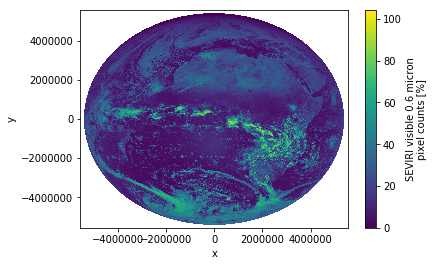
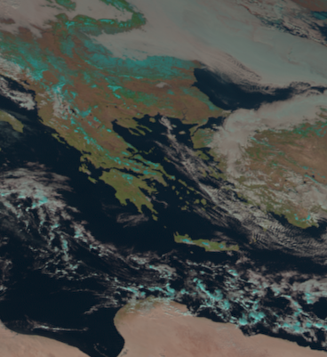

Remote Sensing I
SatPy
A Python Library for Weather Satellite Processing
From the documentation:
SatPy is a python library for reading and manipulating meteorological remote sensing data and writing it to various image and data file formats.
SatPy comes with the ability to make various RGB composites directly from satellite instrument channel data or higher level processing output.
The pyresample package is used to resample data to different uniform areas or grids.
Various atmospheric corrections and visual enhancements are also provided, either directly in Satpy or from those in the PySpectral and TrollImage packages.
Unfortunately, the EUMETSAT is currently repeatedly changing its MSG data formats and SatPy has trouble following these changes.
The latest changes in the MSG data format were already adapted in the SatPy scripts (12.06.2019) but these changes did not yet make it into the conda packaging system. So we have to use pip to get the newest SatPy version:
- Uninstall satpy using conda:
conda uninstall satpy - Reinstall satpy using pip:
pip install satpy
Load & view MSG data
SatPy is well suited for working with data of Meteosat Second Generation Satellites:
import satpy
import numpy as np
First, we specify the file(s) of the scene we want to open together with the reader of the respective file type (in our case we use the netcdf reader for the SEVIRI instrument):
dateien = ["../data/W_XX-EUMETSAT-Darmstadt,VIS+IR+HRV+IMAGERY,MSG1+SEVIRI_C_EUMG_20060117120009.nc"]
files = {'seviri_l1b_nc' : dateien}
Then we instantiate a Scene object with the given files:
scn = satpy.Scene(filenames=files)
The scene attributes tell us what instrument we are dealing with and the start- and end-times of the scene scan:
scn.attrs
{'sensor': {'seviri'},
'start_time': datetime.datetime(2006, 1, 17, 12, 0, 9, 427000),
'end_time': datetime.datetime(2006, 1, 17, 12, 15, 9, 137000)}
To get an overview of all available datasets (=channels/bands) of the scene, we can call the all_dataset_names() function:
scn.all_dataset_names()
['HRV',
'IR_016',
'IR_039',
'IR_087',
'IR_097',
'IR_108',
'IR_120',
'IR_134',
'VIS006',
'VIS008',
'WV_062',
'WV_073']
To be precise, scn.all_dataset_names() lists all data sets which the respective reader is able to load from the scene file. However, if any of these data sets are missing in the scene file, they consequently also cannot be loaded, although they are listed by this method.
Before we are able to work with the datasets, we first have to load the bands we are actually interested in. Let’s say, we are only interested in the visible wavelength at 0.6µm:
scn.load(["VIS006"]) # Note that we have to pass a list to the load function, even if we only want to work with one band.
You can also load bands by passing the specific wavelength you are interested in, e.g.:
scn.load([12.5])
which, in this case, would load the band “IR_120” which covers the wavelength region from 11.0µm to 13.0µm.
We can have a look at all loaded bands by printing out the keys:
scn.keys()
[DatasetID(name='VIS006', wavelength=(0.56, 0.635, 0.71), resolution=3000.403165817, polarization=None, calibration='reflectance', level=None, modifiers=())]
Let’s have a first look at what we are dealing with:
scn.show("VIS006")

Task
- Download the MSG data at https://box.uni-marburg.de/index.php/s/pXhB2Tw4k6ymk4i
- Read the data set with satpy and create a Scene object
- Plot the bands at 0.6μm and at 6.2μm.
- Why can you see the full disk only at 6.2μm?
Ok, thats nice :)
However, SatPy’s show() function doesn’t offer the option to depict a colorbar (so that we get an impression of the value range of the depicted colors).
Fortunately, we can easily achieve this by using the imshow() or pcolormesh() functions from xarray (which are just thin wrappers around the same-named matplotlib functions). For most of our use-cases it’s better to use imshow() as it is much faster when we are dealing with large data sets.
scn["VIS006"].plot.imshow()
<matplotlib.image.AxesImage at 0x7f48541f6f98>

Well, this is rahter ugly and the colorbar title is misleading (although that’s not xarray’s fault).
Like always, if we want to control specific plot elements, we can just use matplotlib itself. We need more lines of code with this approach but the result looks better:
import matplotlib.pyplot as plt
fig, ax = plt.subplots(figsize=(10,10))
plt.imshow(scn["VIS006"].values,cmap="Greys_r")
ax.set_axis_off()
plt.colorbar(fraction=.04)
plt.show()
It seems as if we are dealing with reflectance values here (range goes from 0% to 100%). Let’s go sure…
To get an overview of the metadata of a loaded band, you can just use the print() function on the band:
print(scn["VIS006"])
<xarray.DataArray 'ch1' (y: 3712, x: 3712)>
dask.array<shape=(3712, 3712), dtype=float32, chunksize=(3712, 3712)>
Coordinates:
lat (y, x) float32 dask.array<shape=(3712, 3712), chunksize=(3712, 3712)>
lon (y, x) float32 dask.array<shape=(3712, 3712), chunksize=(3712, 3712)>
* x (x) float64 -5.567e+06 -5.564e+06 ... 5.564e+06 5.567e+06
* y (y) float64 5.567e+06 5.564e+06 5.561e+06 ... -5.564e+06 -5.567e+06
Attributes:
standard_name: toa_bidirectional_reflectance
file_type: nc_seviri_l1b
resolution: 3000.403165817
long_name: SEVIRI visible 0.6 micron pixel counts
polarization: None
modifiers: ()
sensor: seviri
valid_min: 0
calibration: reflectance
comment: Radiance in mW m-2 sr-1(cm-1)-1 = add_offset + ( pi...
scale_factor: 0.023120637983083725
add_offset: -1.17915253713727
valid_max: 1023
units: %
level: None
platform_name: Meteosat-8
name: VIS006
nc_key: ch1
wavelength: (0.56, 0.635, 0.71)
start_time: 2006-01-17 12:00:09.427000
end_time: 2006-01-17 12:15:09.137000
area: Area ID: some_area_name\nDescription: On-the-fly ar...
ancillary_variables: []
This shows us some valuable information about the data:
- The data is stored within an
xarray.DataArray(which itself uses adask.arrayto store the sensor data) - The band has 2 dimensions x and y (it is an image)
- Over both dimensions, the image spreads over 3712 pixels
- Pixel values are stored as float32
- Values are already converted to “reflectance” between 0% and 100%. So SatPy already converted the original raw counts to reflectance values.
- And a lot more (like satellite and sensor name, resolution, …)
Calibration
By default Satpy will provide the version of the dataset with the highest resolution and the highest level of calibration (brightness temperature or reflectance over radiance). It is also possible to request one or more of these exact versions of a dataset by specifying the calibration argument of the load() function:
# This loads the band at 10.8μm as radiances (in mW m-2 sr-1(cm-1)-1):
scn.load([10.8], calibration=['radiance'])
# This loads the band at 10.8μm as brightness temperatures (in K):
scn.load([10.8], calibration=['brightness_temperature'])
fig, (ax1, ax2) = plt.subplots(1, 2, figsize=(14,6))
im1 = ax1.imshow(scn[scn.datasets.keys()[1]].values,cmap="Greys_r"); ax1.set_axis_off()
im2 = ax2.imshow(scn[scn.datasets.keys()[0]].values,cmap="Greys_r"); ax2.set_axis_off()
ax2.set_title("10.8μm Brightness temperature")
ax1.set_title("10.8μm Radiance")
fig.colorbar(im1, ax=ax1, fraction=.05)
fig.colorbar(im2, ax=ax2, fraction=.05)
plt.show()
Coordinates
Let’s go back to the visible band at 0.6μm: From the metadata above, we can also derive that there is coordinate information provided with the data:
lat and lon are coordinate variables, each consisting of a full 3712x3712 layer, spanning along the dimensions x and y.
We can have a closer look at the coordinate layers by printing them to the console:
scn["VIS006"].lat
<xarray.DataArray 'lat' (y: 3712, x: 3712)>
dask.array<shape=(3712, 3712), dtype=float32, chunksize=(3712, 3712)>
Coordinates:
lat (y, x) float32 dask.array<shape=(3712, 3712), chunksize=(3712, 3712)>
lon (y, x) float32 dask.array<shape=(3712, 3712), chunksize=(3712, 3712)>
* x (x) float64 -5.567e+06 -5.564e+06 ... 5.564e+06 5.567e+06
* y (y) float64 5.567e+06 5.564e+06 5.561e+06 ... -5.564e+06 -5.567e+06
Attributes:
missing_value: -999.0
_CoordinateAxisType: Lat
valid_max: 90.0
long_name: Latitudes for each pixel count
standard_name: latitude
valid_min: -90.0
units: degrees_north
So here we see, that lat is given in units of “degrees_north” and that valid values are between -90° and +90°.
For the sake of completeness we can also plot the coordinate layers:
fig, (ax1, ax2) = plt.subplots(1, 2, figsize=(14,6))
im1 = ax1.imshow(scn["VIS006"].lat,cmap="jet",vmin=-90,vmax=90); ax1.set_axis_off()
im2 = ax2.imshow(scn["VIS006"].lon,cmap="jet",vmin=-90,vmax=90); ax2.set_axis_off()
ax2.set_title("lon")
ax1.set_title("lat")
fig.colorbar(im1, ax=ax1, fraction=.05)
fig.colorbar(im2, ax=ax2, fraction=.05)
plt.show()
Quick question:
- Why are
latandlonprovided as 2-dimensional data? (and not 1-dimensional) - What do the values of dimensions
xandymean?
Composites
Built-in composites
SatPy comes with many built-in utility functions to create composite images of the data.
To get an overview of all available composites, you can do:
scn.available_composite_names()
['airmass',
'ash',
'cloudtop',
'cloudtop_daytime',
'colorized_ir_clouds',
'convection',
'day_microphysics',
'day_microphysics_winter',
'dust',
'fog',
'green_snow',
'ir108_3d',
'ir_cloud_day',
'ir_overview',
'ir_sandwich',
'natural_color',
'natural_color_sun',
'night_fog',
'night_microphysics',
'overview',
'overview_sun',
'realistic_colors',
'snow',
'vis_sharpened_ir']
As with the single bands, you have to load a composite into the Scene object first, if you want to work with it:
scn.load(["natural_color"])
scn.show("natural_color")

Let’s have a look at the metadata of the composite:
print(scn["natural_color"])
<xarray.DataArray 'where-3d991db57e1d0ca002dc86117290e728' (bands: 3, y: 3712, x: 3712)>
dask.array<shape=(3, 3712, 3712), dtype=float32, chunksize=(1, 3712, 3712)>
Coordinates:
lat (y, x) float32 -999.0 -999.0 -999.0 -999.0 ... -999.0 -999.0 -999.0
lon (y, x) float32 -999.0 -999.0 -999.0 -999.0 ... -999.0 -999.0 -999.0
* x (x) float64 -5.567e+06 -5.564e+06 ... 5.564e+06 5.567e+06
* y (y) float64 5.567e+06 5.564e+06 5.561e+06 ... -5.564e+06 -5.567e+06
* bands (bands) <U1 'R' 'G' 'B'
Attributes:
standard_name: natural_color
file_type: nc_seviri_l1b
resolution: None
polarization: None
ancillary_variables: []
sensor: seviri
valid_min: 0
area: Area ID: some_area_name\nDescription: On-the-fly...
comment: Radiance in mW m-2 sr-1(cm-1)-1 = add_offset + (...
valid_max: 1023
level: None
platform_name: Meteosat-8
end_time: 2006-01-17 12:15:09.137000
start_time: 2006-01-17 12:00:09.427000
wavelength: None
optional_datasets: []
name: natural_color
prerequisites: ['IR_016', 'VIS008', 'VIS006']
optional_prerequisites: []
calibration: None
modifiers: None
mode: RGB
- We see, that the composite consists of 3 bands, stored in a dask-array with the shape (3, 3712, 3712)
- Each band has 2 dimensions x and y
- Over both dimensions, the images spread over 3712 pixels
- Pixel values are stored as float32
- We also see, that the 3 bands correspond to the red, green and blue layers of the image that we plottetd above.
- These bands are: IR_016, VIS008 and VIS006 (prerequisites)
Guides on how to interpret these composites can be found on the Eumetsat website:
https://www.eumetsat.int/website/home/Data/Training/TrainingLibrary/DAT_2044069.html
Let’s load all available bands (except HRV) and the natural color composite so we can work with these data sets later on:
scn.load(scn.all_dataset_names()[1:])
scn.load(["natural_color"])
Task
Plot a composite that is useful for interpreting the microphysical properties of clouds at daytime using the 06:00 UTC scene.
User-defined composites
Additionally to the many built-in composites, you can define your own composites using the Compositer classes of SatPy.
Let’s create an infrared overview using the bands at 3.9μm, 10.8μm and 12.0μm:
compositor = satpy.composites.GenericCompositor("Übersicht")
composite = compositor([scn[3.9],scn[10.8],scn[12.0]])
That’s it.
However, a composite itself is just defined as a special dataset which may have several bands (like R, G and B bands). The data isn’t stretched, or clipped or gamma filtered until an image is generated. To get an image out of the above composite, you have to convert it to an image object and tweak it’s display properties:
img = satpy.writers.to_image(composite)
img.invert([True, True, True])
img.stretch("linear")
img.gamma(1.0)
img

Task:
- Familiarize yourselves with SatPy’s DayNightCompositor
- Create a composite that shows microphysical information for both, day and night regions of the 06:00 UTC scene.
Cropping
Often, you are only interested in a specific region of the fulldisk.
Let’s say we want to take a closer look at Greece. We can crop the fulldisk to a specific region using the crop() function of SatPy’s Scene class:
# Crop to a region via lat/lon values (lon_min, lat_min, lon_max, lat_max)
scn_cropped = scn.crop(ll_bbox=(18, 32, 30, 45))
scn_cropped.show("natural_color")
# Crop to a region via x/y values in original projection units (x_min, y_min, x_max, y_max)
# In the case of MSG, the projection units are meters (distance from the nadir)
scn_cropped = scn.crop(xy_bbox=(14E5, 31E5, 25E5, 43E5))
scn_cropped.show("natural_color")

The cropped scene keeps all original metadata. Only the bands, composites and coordinates/dimensions are cropped to the specified extents:
print(scn_cropped["natural_color"])
<xarray.DataArray 'where-3d991db57e1d0ca002dc86117290e728' (bands: 3, y: 401, x: 368)>
dask.array<shape=(3, 401, 368), dtype=float32, chunksize=(1, 401, 368)>
Coordinates:
lat (y, x) float32 46.407917 46.410267 ... 30.873705 30.875648
lon (y, x) float32 19.713308 19.759039 19.804794 ... 28.439613 28.47925
* x (x) float64 1.4e+06 1.403e+06 1.406e+06 ... 2.498e+06 2.501e+06
* y (y) float64 4.301e+06 4.298e+06 4.295e+06 ... 3.104e+06 3.101e+06
* bands (bands) <U1 'R' 'G' 'B'
Attributes:
standard_name: natural_color
file_type: nc_seviri_l1b
resolution: None
polarization: None
ancillary_variables: []
sensor: seviri
valid_min: 0
area: Area ID: some_area_name\nDescription: On-the-fly...
comment: Radiance in mW m-2 sr-1(cm-1)-1 = add_offset + (...
valid_max: 1023
level: None
platform_name: Meteosat-8
end_time: 2006-01-17 12:15:09.137000
start_time: 2006-01-17 12:00:09.427000
wavelength: None
optional_datasets: []
name: natural_color
prerequisites: ['IR_016', 'VIS008', 'VIS006']
optional_prerequisites: []
calibration: None
modifiers: None
mode: RGB
Resampling
Cropping is nice and all, but due to the satellite viewing angle, the cropped scene can look very distorted, especially when we are working with the margin regions of the scene. To get a better looking view of the domain of interest, you can use the resampling utilities of SatPy (or pyresample).
To resample the data to a specific area and projection, you can specify one of the many predefined areas of SatPy. All predefined areas can be found in SatPy’s satpy/etc/areas.yaml file.
For example, let’s take libya:
local_scn = scn.resample("libya")
This resamples the scene and all loaded bands/composites to the extents of the “libya” area.
If you look into the areas.yaml file, you see how it is defined:
libya:
description: libya area
projection:
proj: merc
lat_ts: 31.625
lon_0: 17.875
ellps: WGS84
shape:
height: 1024
width: 1280
area_extent:
lower_left_xy: [-1921632.0902750609, 1725320.2028891125]
upper_right_xy: [1918367.9097249391, 4797320.202889113]
units: m
Let’s plot the natural color composite again, to get an overview of where we are:
local_scn.show("natural_color")
Nice, but let’s go back to Greece!
Unfortunately, there is no predefined area definition in the yaml-File for Greece.
Luckily, we can also define our own area of interest! So, let’s resample the data using the Mercator projection:
from pyresample.geometry import AreaDefinition
area_id = 'Griechenland'
description = 'Griechenland und Umgebung in Mercator-Projektion'
proj_id = 'Griechenland'
proj_dict = {'proj': 'merc', 'lat_ts': 38, 'lon_0': 25}
width = 800 # width of the result domain in pixels
height = 800 # height of the result domain in pixels
llx = -10E5 # projection x coordinate of lower left corner of lower left pixel
lly = 27E5 # projection y coordinate of lower left corner of lower left pixel
urx = 10E5 # projection x coordinate of upper right corner of upper right pixel
ury = 47E5 # projection y coordinate of upper right corner of upper right pixel
area_extent = (llx,lly,urx,ury)
area_def = AreaDefinition(area_id, proj_id, description, proj_dict, width, height, area_extent)
local_scn = scn.resample(area_def)
local_scn.show("natural_color")
For more information on resampling, visit the pyresample and PROJ.4 documentations.
Task:
- Crop the fulldisk to Central Europe (lat: -10 to 20, lon: 35 to 63) and plot a quicklook of the natural color composite.
-
Resample the fulldisk to Central Europe by defining your own area in Lambert Azimuthal Equal Area and plot a quicklook of the natural color composite. Use the following settings:
- lat and lon of origin: 49/10
- width and height of the resulting domain: 750px
- projection x/y coordinates of lower left: -18E5
- projection x/y coordinates of upper right: 18E5